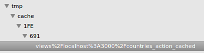

Optimizando Rails
Por Alter Lagos
Sistema de ejemplo

Active Record
Queries N+1
@countries = Country.all
<% @countries.each do |country| %>
<tr>
<td><%= country.name %></td>
<td><%= country.iso %></td>
<% if !country.states.blank? %>
<td><%= country.states.count %></td>
<td><%= country.states.first.name %></td>
<% end %>
</tr>
<% end %>
Active Record
Queries N+1
Started GET "/" for 127.0.0.1 at 2012-11-25 20:24:53 -0300
Processing by CountriesController#index as HTML
Country Load (0.4ms) SELECT `countries`.* FROM `countries`
State Load (0.7ms) SELECT `states`.* FROM `states` WHERE `states`.`country_id` = 1
(0.6ms) SELECT COUNT(*) FROM `states` WHERE `states`.`country_id` = 1
State Load (0.8ms) SELECT `states`.* FROM `states` WHERE `states`.`country_id` = 2
(0.7ms) SELECT COUNT(*) FROM `states` WHERE `states`.`country_id` = 2
State Load (0.8ms) SELECT `states`.* FROM `states` WHERE `states`.`country_id` = 3
(0.5ms) SELECT COUNT(*) FROM `states` WHERE `states`.`country_id` = 3
State Load (0.6ms) SELECT `states`.* FROM `states` WHERE `states`.`country_id` = 4
(0.6ms) SELECT COUNT(*) FROM `states` WHERE `states`.`country_id` = 4
State Load (0.6ms) SELECT `states`.* FROM `states` WHERE `states`.`country_id` = 5
(0.5ms) SELECT COUNT(*) FROM `states` WHERE `states`.`country_id` = 5
State Load (0.6ms) SELECT `states`.* FROM `states` WHERE `states`.`country_id` = 6
(0.6ms) SELECT COUNT(*) FROM `states` WHERE `states`.`country_id` = 6
State Load (0.7ms) SELECT `states`.* FROM `states` WHERE `states`.`country_id` = 7
(0.6ms) SELECT COUNT(*) FROM `states` WHERE `states`.`country_id` = 7
State Load (0.7ms) SELECT `states`.* FROM `states` WHERE `states`.`country_id` = 8
(0.6ms) SELECT COUNT(*) FROM `states` WHERE `states`.`country_id` = 8
State Load (0.6ms) SELECT `states`.* FROM `states` WHERE `states`.`country_id` = 9
(0.5ms) SELECT COUNT(*) FROM `states` WHERE `states`.`country_id` = 9
Active Record
Queries N+1
# @countries = Country.all
@countries = Country.includes(:states)
Active Record
Queries N+1
Started GET "/" for 127.0.0.1 at 2012-11-26 23:11:49 -0300
Processing by CountriesController#index as HTML
Country Load (0.4ms) SELECT `countries`.* FROM `countries`
State Load (2.7ms) SELECT `states`.* FROM `states` WHERE `states`.`country_id` IN (1, 2, 3, 4, 5, 6, 7, 8, 9)
(0.4ms) SELECT COUNT(*) FROM `states` WHERE `states`.`country_id` = 1
(0.4ms) SELECT COUNT(*) FROM `states` WHERE `states`.`country_id` = 2
(0.4ms) SELECT COUNT(*) FROM `states` WHERE `states`.`country_id` = 3
(0.3ms) SELECT COUNT(*) FROM `states` WHERE `states`.`country_id` = 4
(0.3ms) SELECT COUNT(*) FROM `states` WHERE `states`.`country_id` = 5
(0.3ms) SELECT COUNT(*) FROM `states` WHERE `states`.`country_id` = 6
(0.3ms) SELECT COUNT(*) FROM `states` WHERE `states`.`country_id` = 7
(0.3ms) SELECT COUNT(*) FROM `states` WHERE `states`.`country_id` = 8
(0.3ms) SELECT COUNT(*) FROM `states` WHERE `states`.`country_id` = 9
Active Record
Queries N+1
# @countries = Country.all
# @countries = Country.includes(:states)
@countries = Country.includes(:states)
.select('countries.*, count(states.id) as count_states')
.joins('LEFT OUTER JOIN
states ON states.country_id = countries.id')
.group('countries.id')
<!-- <%= country.states.count %> -->
<%= country.count_states %>
Active Record
Queries N+1
Started GET "/" for 127.0.0.1 at 2012-11-26 23:19:31 -0300
Processing by CountriesController#index as HTML
Country Load (0.5ms) SELECT countries.*, count(states.id) as count_states FROM `countries` LEFT OUTER JOIN states ON states.country_id = countries.id GROUP BY countries.id
State Load (2.5ms) SELECT `states`.* FROM `states` WHERE `states`.`country_id` IN (1, 2, 3, 4, 5, 6, 7, 8, 9)
Active Record
Queries N+1
Bullet github.com/flyerhzm/bullet
PONER UN PANTALLAZO CON BULLET Active Record
Indices
add_index :countries, [:name]
add_index :states, [:country_id, :name]
Foreigner github.com/matthuhiggins/foreigner
Immigrant github.com/jenseng/immigrant
Active Record
Orden Importa
State.where('country_id = ? and name like ?', id, "%#{name}%")
# No es lo mismo que...
State.where('name like ? and country_id = ?', "%#{name}%", id)
add_index :states, [:country_id, :name]
# No es lo mismo que...
add_index :states, [:name, :country_id]
Active Record
Orden Importa
> State.select('count(distinct country_id), count(distinct name)')
+----------------------------+----------------------+
| count(distinct country_id) | count(distinct name) |
+----------------------------+----------------------+
| 221 | 3704 |
+----------------------------+----------------------+
1 row in set
Caching
SQL Caching
@countries = Rails.cache.fetch('sql_countries') do
Country.all_states_and_counts_included.all
end
Caching
Page Caching
class CountriesController < ApplicationController
caches_page :index
Caching
Action Caching
class CountriesController < ApplicationController
caches_action :index
Caching
Fragment Caching
<% cache :recent_countries do %>
<div>
<strong>Últimos Países modificados</strong>
<ul>
<% @recent_countries.each do |c| %>
<li><%= link_to c.name, c %></li>
<% end%>
</ul>
</div>
<% end %>
Cache Digests github.com/rails/cache_digests
Caching
Renovar Cache
def create
@country = Country.new(params[:country])
if @country.save
expire_page :action => :index
expire_action :action => :index
expire_fragment :action => :index
redirect_to @country
else
render action: "new"
end
end
Caching
Sweepers
class CountrySweeper < ActionController::Caching::Sweeper
observe Country
def after_create(country)
expire_cache_for(country)
end
def after_update(country)
expire_cache_for(country)
end
def after_destroy(country)
expire_cache_for(country)
end
private
def expire_cache_for(country)
expire_page(:controller => 'countries', :action => 'index')
end
end
Caching
Sweepers
class CountriesController < ApplicationController
caches_page :index
cache_sweeper :country_sweeper